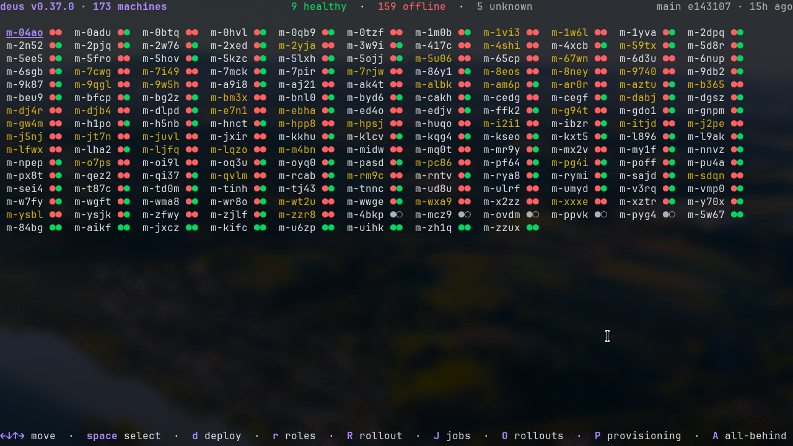
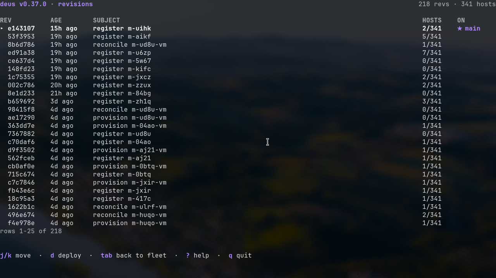
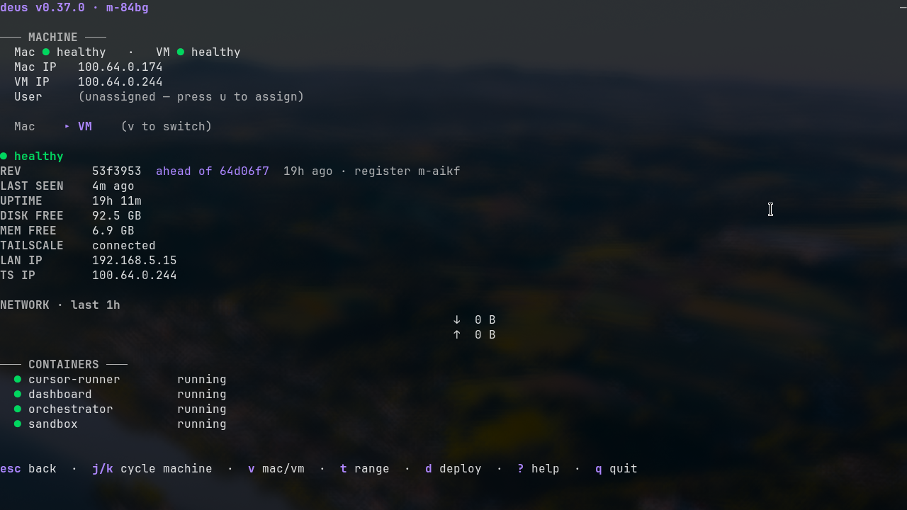

Malli Fleet
How we build, provision, and run a fleet of about 575 Apple-silicon Mac Minis. Each Mac configures itself from a factory state, with no keyboard and no person involved, and comes up as a live node on the internet.
01Overview
Every machine is described in Nix code and driven to that state on its own. Plug a new Mac into ethernet and about 30 minutes later it is running our software and is reachable at m-XXXX.themalli.ai. There is no golden image to hand-maintain and no manual setup.
Three repositories build and run the fleet. malli-nix describes what each Mac looks like. malli-deus (which we call "deus") is the Go program that provisions and manages the machines. ~/nix defines the control-plane server, "conduit", plus the homelab servers behind it. The rest of this page walks through each of these and the flows that connect them.
02Architecture
Apple tells a fresh Mac where to enroll. conduit is the public front door and the brain. mantle answers Apple's management protocol, harbor serves the container images, and each Mac configures itself and runs our software, published through a Cloudflare tunnel.
03The pieces
conduit
A rented VPS with a public IP. It runs Headscale (the mesh VPN), deus-server, Caddy, a git mirror of the config repos, a Nix binary cache, and the user-VPN gateway. Everything Apple and every Mac talks to starts here.
mantle
A homelab server running the self-hosted Apple MDM stack: nanomdm, nanodep, scep, and the enrollment-profile server. conduit reverse-proxies mdm/scep/enroll.matv.io to it over WireGuard.
harbor
A homelab server that hosts the container-image registries the fleet pulls from: a Docker registry on 5000 and an OCI registry (Zot) on 5001 for the macOS VM images.
the fleet
The Mac Minis, named m-XXXX (for example m-5fro). About 575 are planned. The deus console tracks 173 today, most still offline as they are brought online.
04One Mac, three layers
A single Mac Mini is really three stacked machines. The macOS host is the bare metal. Inside it, Lima runs a NixOS VM where our software runs today. Some Macs also run a second macOS VM under Tart that an end user can log into.
05How a Mac sets itself up
A person unboxes the Mac and plugs in ethernet. Nothing else. The rest runs on its own, driven by Apple's enrollment program and then by deus.
- 1
Assignment in Apple Business
The Mac's serial number is assigned to our MDM server. A timer on mantle pushes our enrollment profile onto it, so the device knows where to enroll before it is ever switched on.
- 2
First boot and enrollment
On ethernet, the Mac uses Auto Advance to skip Setup Assistant with no prompts. It requests an identity certificate over SCEP, then enrolls with nanomdm on mantle.
- 3
MDM configures the device
deus watches each check-in and drives the device: it creates a hidden admin account (
tars), installs five configuration profiles, and installs the bootstrap package. Setup Assistant is held on a "configuring" screen (await_device_configured) until deus releases it with theDeviceConfiguredcommand. - 4
Phase A, before anyone logs in
The package runs as root. It asks deus-server for this serial's one-time credentials (its hostname, a Headscale key, the secrets key, an agent token, an auto-login password), turns on auto-login, and reboots.
- 5
Phase B:
deus bootstrap-runAfter auto-login, deus runs 22 small, idempotent steps that each check their own result. In order: install Nix, join the tailnet, seed the Nix cache, rebuild the macOS host, start the NixOS VM, rebuild the VM, register the host, run the granter, and finish with a health check.
- 6
Live
The node is online as
m-XXXX, its containers are up, andhttps://m-XXXX.themalli.ai/healthreturns 200. This has run start to finish on real hardware.
m-XXXX.themalli.ai, writes that machine's secrets back into malli-nix in git (encrypted), and refreshes the mirror. The VM then rebuilds with its real secrets and starts serving.06Apple Business and enrollment
Apple renamed Apple Business Manager to just "Apple Business" in April 2026, folding in Business Essentials and Business Connect. The enrollment mechanics did not change, only the name and portal. We buy Macs so they land in our Apple Business account by serial, and each serial is assigned to our self-hosted MDM server.
Automated Device Enrollment (ADE) is the modern name for what used to be called DEP. When an ADE Mac first boots on a network, it contacts Apple, receives our enrollment URL, and enrolls in our MDM. ADE devices are supervised, which gives the management server the wider set of controls Apple reserves for organization-owned hardware. We set the enrollment as non-removable, so the machine cannot drop management from the UI.
Two settings make the hands-off flow work. await_device_configured parks Setup Assistant after enrollment so deus can install everything first, and the DeviceConfigured command releases it once deus is done. Auto Advance lets an ethernet-connected Mac skip the remaining panes with no clicks.
| Piece | What it does here |
|---|---|
| nanodep | Talks to Apple's ADE service using the server token, syncs the list of our serials, and assigns the enrollment profile to them. |
| nanomdm | The MDM server. Devices check in here and receive commands. Apple's push service (APNs) is what wakes a device to check in. |
| scep | The certificate authority. Enrollment issues each device an identity certificate that authenticates its MDM connection. |
| mdmenroll | Serves the enrollment profile that the device fetches at first boot. |
07The NixOS VM
Each Mac runs one NixOS VM under Lima, using Apple's virtualization. This is where our application containers run today. It joins the same tailnet as the host and takes the hostname m-XXXX-vm. We deploy it with Colmena.
VM shape
| Type | Apple Virtualization (vz), aarch64 |
| CPU / RAM | 4 vCPU / 8 GiB |
| Disk | 100 GiB |
| Mount | the Mac user home, over virtiofs |
| Rosetta | on, so x86_64 images run |
What runs inside
Docker runs four containers. Three are ours, pulled from conduit's registry and pinned by digest; the fourth is a small utility container.
Also: cloudflared for the public tunnel, Tailscale, and a weekly Docker prune.
The VM learns its name from the host. The Mac writes its hostname to ~/.malli-hostname on the shared mount; a small service in the VM reads it, appends -vm, and sets its Tailscale name. For fast rebuilds, the VM points at the fleet's LAN Nix cache first (see the cache) and falls back to the public cache.
08The macOS user VM
Some Macs run a second, full macOS desktop inside a Tart VM. This is the machine an end user actually logs into. It is not hardened like the fleet host; it is a normal desktop that happens to be managed by Nix.
VM shape
| Runner | Tart 2.32.1 |
| Base image | macOS Sequoia, about 23 GB, from conduit's OCI registry |
| CPU / RAM | 4 vCPU / 8 GiB |
| Disk | 80 GB |
How a user reaches it
The host forwards two ports into the guest with socat: SSH on 2222 and screen sharing (VNC) on 5900. A user connects through the Malli client described below.
Assigned by the user-vm role, currently on m-g94t, m-pg4i, and m-qvlm.
The guest runs nix-darwin, so the whole desktop is declarative. On first boot it creates the user account and password from a secrets file, turns on auto-login and screen sharing, and runs darwin-rebuild against a Nix store that was pre-seeded into the base image. That pre-seed turns a 30-minute cold install into a rebuild of about a minute or two.
09Remote access: the Malli client
Users reach their Mac through a small macOS client (the "Malli" app) that runs a private WireGuard tunnel to conduit. This is separate from Tailscale, so it never collides with a user's own Tailscale. An operator grants access with one command; the user redeems a token and connects.
The grant is a single command. It mints a WireGuard config for the user and opens a firewall entry allowing that user's address to reach that one machine on those two ports:
deus user vpn create owen --allow m-pg4i:2222,5900The user gets a token and a welcome link, installs the client, and pastes the token. From then on they can ssh -p 2222 into their Mac and open its screen with any VNC client. The full native app is still being built; the server side and the tunnel are already running.
10Secrets with sops
Secrets live in git, encrypted with sops and age. They are only ever decrypted on the machine that needs them, at the moment Nix applies its configuration. Two keys can read any secret: a single fleet key that every Mac and VM holds, and Daniel's personal key. The fleet key is dropped onto each machine during the bootstrap, so a freshly provisioned Mac can decrypt its own config.
There are two layers of secret files. secrets/fleet.yaml holds shared values used by every machine. hosts/<name>/secrets.yaml holds values specific to one machine, such as its Cloudflare tunnel token or its user-VM passwords. A per-machine file wins over the shared one.
Nix does not hand raw secrets to services. It renders small env files from templates and points each service at the file it needs:
| Template | Feeds |
|---|---|
malli.env | the application containers (identity, API keys, config) |
tailscale-authkey | the VM joining the tailnet |
cloudflared-tunnel-env | the public tunnel |
vm-secrets.env | the macOS user VM's account and screen-sharing passwords |
To edit a secret, open the file with sops. It re-encrypts to both keys on save, and the next deploy of that machine picks up the change:
sops secrets/fleet.yaml # shared
sops hosts/m-1w6l-vm/secrets.yaml # one machine11Per-machine config and roles
The flake turns the registry of hostnames into config automatically. For every entry in hosts/registry.nix it produces a darwinConfigurations."m-XXXX" for the Mac and a nixosConfigurations."m-XXXX-vm" for its VM. You rarely touch the flake to change a machine.
Change one machine: drop a file named after it
If a file exists at hosts/<hostname>/host.nix, the flake imports it for that machine and no other. Create it and the machine picks it up; delete it and the machine goes back to the standard config. The whole mechanism is one line:
hostOverride = hostName:
let f = ./hosts/${hostName}/host.nix;
in lib.optional (builtins.pathExists f) f;Roles: where Nix and deus meet
A role is a single name that maps to a set of Nix modules. Give a machine a role and it gains that capability on its next rebuild. The interesting part is that a role is the join between two systems that would each be limited on their own. Nix says what a capability is. deus decides which machines have it, and writes that decision straight into the config repo.
roles.json to git→
the next rebuild folds the module in→
the machine has the capability
An operator flips a role in the console, deus commits it to hosts/roles.json and pushes, and the next rebuild of that machine picks up the matching module. The console and the source of truth are the same thing. Every capability change is a normal git commit, so it is revertible and auditable, and the same action can target one machine or a hundred. The roles we use today:
cache
Run a LAN Nix binary cache on this machine.
user-vm
Run a macOS user VM for an end user.
bake
Build the golden macOS VM image.
queen
Reserved for a coordinator role.
Carving the fleet by hardware
The fleet is not one kind of machine. Alongside the base M4 Mac Minis we have M4 Pro units with more memory and a larger disk, an extra 8 GB of RAM and 256 GB of storage each. deus already knows the shape of every machine, because each agent reports its CPU, memory, and disk on every heartbeat. Roles turn that knowledge into policy.
A concrete example. Define a reserved role that both marks the M4 Pro machines and keeps them for our own workloads instead of a customer user-VM. Those bigger boxes then host our own services, an internal database, a larger shared build cache, or heavier internal tools, while each base mini runs one user-VM. Because the hardware is visible in the heartbeat, deus can pick the targets by capability, so "the M4 Pro machines host our stuff" becomes a rule rather than a hand-kept list.
That is the payoff of putting roles at the seam between Nix and deus: a pile of Macs of different sizes becomes a fleet you can carve up by capability, from one console, with every decision living in git.
12The Nix cache
Rebuilding hundreds of machines against the public Nix cache would be slow and wasteful. Instead, one machine on the fleet holds the cache role and serves a shared LAN cache; every other machine pulls from it first.
The cache machine runs nginx as a caching proxy. Port 5080 fronts the public Nix cache, and port 5081 fronts the Determinate and NixOS-Lima download sources. Both are reachable only over the tailnet. Today the role sits on m-1w6l. Every other VM lists that cache as its first substituter, at a higher priority than the public cache, so a package already fetched once is served locally to the rest of the fleet.
A matching cache on the macOS side, serving Mac store paths plus Apple's own content caching, is planned but not built yet.
13deus: running the fleet
deus is the Go program that provisions and operates the fleet. deus-server runs on conduit and holds the state. A deus-agent on every Mac and VM heartbeats home every 30 seconds with health, disk, network, container state, and current revision. Operators drive it from a terminal console.
ssh -p 2222 fleet@conduit.matv.io # then run: deusThe console
The console opens on a grid of the whole fleet, each machine shown with a health dot and its current revision. From there you drill into one machine, or open the other views.
| View | What it is for |
|---|---|
| Fleet grid | Every machine at a glance, with health and revision drift. Select one or many. |
| Host detail | One machine's full state: health, revision, uptime, disk, network graph, containers, tunnel status. |
| Provisioning | Live view of machines currently enrolling and bootstrapping. |
| Bootstrap detail | The 22 steps for one machine, with a status glyph and log tail per step. |
| Revisions | Which config commit each machine is on. The starting point for a rollback. |
| Rollouts | Progress of a phased rollout, and every machine's job within it. |
| Jobs | Recent deploys with live log tails. |



Deploy
A deploy is initiated from the grid or the CLI. deus-server does not run the build on itself; it opens an SSH connection to the target and runs the rebuild there, pinned to a specific config commit from conduit's mirror:
sudo darwin-rebuild switch --flake 'git://conduit/malli-nix.git?rev=<sha>#m-XXXX' # a Mac
sudo nixos-rebuild switch --flake 'git://conduit/malli-nix.git?rev=<sha>#m-XXXX-vm' # its VMUp to 20 deploys run at once. Every deploy streams its log back, which the console tails live.
Rollback
Rollback is a deploy to an earlier commit. In the revisions view you pick a prior commit and redeploy the machines that are not already on it. Because every deploy is pinned to a commit, going back is the same operation as going forward.
Phased rollouts
For a fleet-wide change you start a rollout instead of deploying to everything at once. It ships in batches of five and stops on the first failure, so a bad change hits five machines rather than all of them. The rollouts view shows progress and lets you open any machine's log. State lives in the database, so a server restart resumes a rollout cleanly.
14Where this is heading
The current design puts our software in a NixOS VM and gives users a separate macOS VM. The plan simplifies the middle and expands what users can do.
Retire the NixOS VM
Move our own containers off the Linux VM and run them directly on the macOS host. That removes a whole layer per Mac and the Lima runtime with it.
The macOS VM becomes the user's space
The macOS VM is where users build and run their own apps. They ask Malli for something, and an app comes up with its own SQLite database, running locally in their VM.
Each app is a flake
The macOS VM runs nix-darwin, so every user app is packaged as its own flake. That keeps a machine full of ad-hoc apps organized and reproducible.
Local build, host-side exposure
An app is exposed locally in the VM. The public Cloudflare tunnel runs on the host side, so the user gets a real URL without managing any of the networking.
The end state: a user reaches their macOS VM by SSH and screen sharing, talks to Malli, and ends up with a running app backed by a database and reachable on the internet. The host runs our services and the tunnels; the VM runs the user's world.
15Glossary
| ADE | Automated Device Enrollment. A Mac auto-enrolls in our MDM at first boot with no setup. The modern name for DEP. |
| MDM | The Apple protocol for managing Macs remotely. Our server is nanomdm. |
| nix-darwin / NixOS | Declarative configuration for macOS and for Linux. |
| Lima / Tart | Run a Linux VM and a macOS VM, respectively, on a Mac. |
| Headscale / tailnet | Our self-hosted Tailscale control server and the private mesh network every machine joins. |
| deus | The Go program that provisions and runs the fleet. |
| granter | The deus step that gives a machine its Cloudflare tunnel, DNS, and secrets. |
| sops / age | How secrets are encrypted in git. |
| Colmena | Deploys NixOS config to the fleet VMs. |
| m-XXXX | A fleet Mac. Its VM is m-XXXX-vm and it serves at m-XXXX.themalli.ai. |